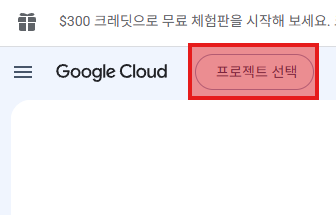
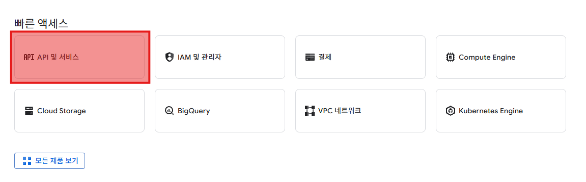
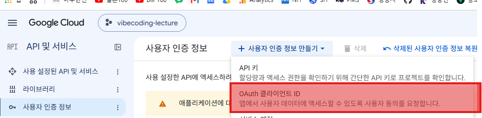

내 서비스에 구글 로그인을 붙인다
4장에서 만든 공개 API 데이터 페이지를 — 이제 "로그인한 사람만" 쓰는 진짜 서비스로. 단계별 매뉴얼 없이, 단 3개의 문장과 Claude와의 대화만으로 구글 OAuth 로그인을 붙이고 Vercel에 배포합니다.
4장에서 만든 데이터 페이지 — 지금은 누구나 본다.
공개 API 데이터를 가져와 보여주던 그 페이지. 링크만 알면 누구든 들어옵니다. 이번 장에서는 여기에 문을 답니다 — "로그인한 사람만".
로그인 — "내 서비스"의 시작
왜 로그인을 거나
- 아무나 X — 허락한 사람만 들어옴
- 사용자가 누군지 알 수 있음 — 개인화의 출발
- "공개 페이지"와 "진짜 서비스"를 가르는 기본기
왜 하필 구글로?
- 비밀번호를 내가 저장하지 않음 — 보안 부담 ↓
- 사용자는 이미 있는 구글 계정으로 한 번에
- 가입 절차 없음 — 버튼 한 번이면 끝
직접 비밀번호를 받고 저장하는 건 — 다루기 까다롭고 위험합니다. 구글에 맡기는 게 더 안전하고 더 쉽습니다.
이 챕터엔 단계별 매뉴얼이 없습니다 — 일부러.
실제 강의에서도 슬라이드 없이 진행했습니다. 강사가 던진 건 단 3개의 문장. 나머지는 전부 Claude와 대화하며 풀었습니다 — 그게 이번 장에서 배울 진짜 기술입니다.
강사가 던진 건 — 이 3문장이 전부였다
로그인 기능 만들고 로그인 안 하면 서비스 사용 못 함. 로그인 창만 보여야 함. 구글 auth를 사용해서 만들 것임. 나는 로그인 만드는 거 처음이니까 설명해 주면서 수행해야 함.
화려한 프롬프트가 아닙니다 — 실제 강의 중에 친 그대로입니다. 세 문장의 역할은 ① 목표 · ② 제약(기술) · ③ 내 수준 — 왜 이 3문장이 통했는지 다음 장에서 분해합니다.
이 3문장이 — 좋은 시작점인 이유
무엇을 원하나
"로그인 안 하면 못 쓴다, 로그인 창만." — 원하는 결과를 분명히. 모호하지 않으니 엉뚱하게 안 감.
어떤 방법으로
"구글 auth로." — 기술 선택을 못 박음. Claude가 여러 방법 사이에서 헤매지 않음.
나에게 맞춰라
"처음이니 설명하며." — Claude의 말투·속도를 내 수준에 맞춤. 모르는 채로 안 넘어감.
목표 · 제약 · 내 수준 — 이 3가지는 로그인뿐 아니라 어떤 작업에도 쓰는 프롬프트 뼈대입니다. 외워두세요.
"구글로 로그인" — 비밀번호는 구글이 맡는다.
OAuth는 내 서비스가 구글에게 "이 사람 누군지 확인 좀"이라고 위임하는 방식. 사용자는 구글 로그인만 하면 되고, 내 서비스는 비밀번호를 받지도 저장하지도 않습니다.
버튼 클릭 → 구글 → 내 서비스로 복귀
이 흐름의 코드를 우리가 직접 쓰지 않습니다 — Claude가 씁니다. 우리는 흐름만 이해하면 됩니다.
딱 하나 준비 — 구글 OAuth 자격증명
무엇을
Google Cloud Console에서 OAuth 클라이언트 ID + 시크릿을 발급받습니다.
- "내 서비스가 구글에 등록됐다"는 증표
- 이게 있어야 "구글로 로그인"이 동작
- 발급은 무료 · 한 번만 하면 됨
어떻게 — 막막한 게 정상
처음이라 어디를 눌러야 할지 막막합니다. Claude에게 그대로 물어보세요.
- "구글 OAuth 클라이언트 어디서 어떻게 만들어?"
- 어느 메뉴를 누를지 단계로 설명해 줌
- 화면이 다르면 — 보이는 그대로 말하기
ID·시크릿은 비밀번호 같은 것 — 채팅방·GitHub에 그대로 올리지 마세요. 안전하게 두는 법은 배포 슬라이드에서.
막막할 땐 — 이 세 화면을 지난다고만 알아두기



외울 필요 없습니다 — 순서는 Claude가 안내합니다. 화면이 이렇게 생겼다는 것만 알아두면, 막혔을 때 "지금 어느 화면"인지 말하기 쉬워집니다.
3문장을 던지고 — 막히면 되묻는다
진행
- Plan Mode 켜기 —
Shift+Tab두 번 - 3문장을 그대로 입력
- Claude의 계획·설명을 읽기
- 모르는 말이 나오면 "그게 뭐야?" 되묻기
- 한 단계씩 승인하며 진행
모르는 단어가 나오면 멈추고 물어보세요 — 문장 3번이 "설명하며 진행"이라, Claude가 풀어서 답합니다.
로그인 전·후가 제대로 갈리는지
로그인 창만 보여야 한다
- "구글로 로그인" 버튼 하나만 화면에
- 4장 데이터 페이지는 안 보임
- 주소를 직접 쳐도 — 막혀야 함
서비스 전체가 열린다
- 구글 로그인 통과 → 페이지 진입
- 4장에서 만든 화면 그대로 사용
- 로그아웃하면 — 다시 로그인 창으로
둘 다 직접 해보세요 — 로그인 안 한 상태에서 페이지가 새어 보이면 "로그인 안 하면 아무것도 안 보이게 막아줘"라고 다시.
배포 — 환경변수와 리디렉트 URI 두 가지만
① 환경변수
구글 ID·시크릿을 코드에 X — Vercel 환경변수로 넣습니다.
- Vercel 프로젝트 → Settings → Environment Variables
- 비밀이 GitHub에 올라가지 않음
- 로컬은
.env파일에 (커밋 금지)
② 리디렉트 URI
배포되면 주소가 바뀝니다 — localhost → *.vercel.app.
- 구글 Console "승인된 리디렉트 URI"에 배포 주소 추가
- 안 하면
redirect_uri_mismatch에러 - 로컬·배포 주소를 둘 다 등록해 두기
"배포했더니 로그인이 안 돼요"의 90%는 이 두 가지 — Claude에게 "Vercel 배포용으로 OAuth 설정 맞춰줘"라고 하면 챙겨줍니다.
배포 주소 등록 → 로그인 성공까지


배포되면 주소가 localhost → *.vercel.app로 바뀝니다 — 이 주소를 구글 콘솔에 등록해야 redirect_uri_mismatch 없이 로그인이 됩니다.
막히면 — 에러 메시지를 그대로 Claude에게
.env 양쪽에 ID·시크릿을 넣었는지 확인.에러 화면을 캡처하거나 글자를 그대로 붙여넣으면 원인을 짚어줍니다 — 앞서 익힌 "에러는 그대로" 원칙 그대로.
4장 폴더에서 — 로그인 한 바퀴
4장 작업 폴더 열기 — API 페이지를 만든 그 폴더에서 claude 실행
Plan Mode + 3문장 입력 — 목표·제약·내 수준 그대로
구글 자격증명 발급 — Claude 안내대로 클라이언트 ID·시크릿
로컬에서 로그인 전·후 확인 — 로그인 창만 / 통과 후 전체
Vercel 배포 + 리디렉트 URI — 환경변수와 승인 주소 챙기기
배포 링크 채팅방 공유 — 옆 사람 계정으로 로그인 테스트
한 번에 안 되는 게 정상입니다 — 막히면 에러를 그대로 Claude에게, 그래도 안 되면 오른쪽 질문 버튼에. 덱 2(방명록)에서 Supabase에 맡겼던 로그인 — 그 속에서 돌던 과정이 바로 이것입니다.
매뉴얼이 없어도 — 3문장이면 시작할 수 있다.
외울 건 OAuth 설정 절차가 아닙니다. "처음 해보는 일도, 목표·제약·내 수준 3문장으로 Claude와 대화하며 끝낸다" — 이 방식이 과정 내내, 그리고 과정이 끝난 뒤에도 쓰는 기술입니다.
구글 로그인 — 내 페이지가 진짜 서비스가 됐다
4장에서 만든 데이터 페이지에 문을 달았습니다 — 3문장으로 시작하고, 막히면 대화로 풀고, 구글 OAuth를 붙여 Vercel 배포까지.